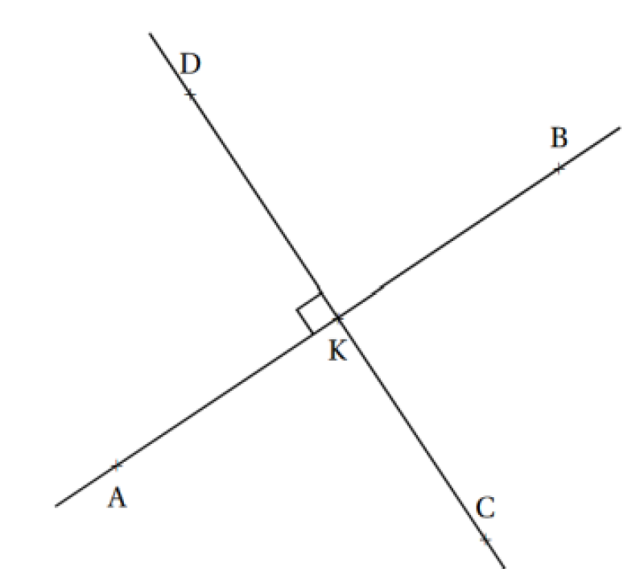
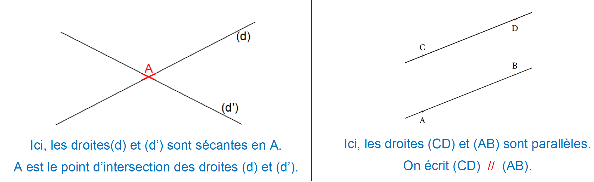
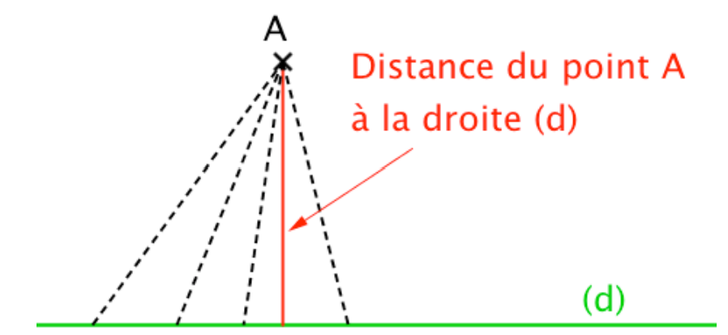
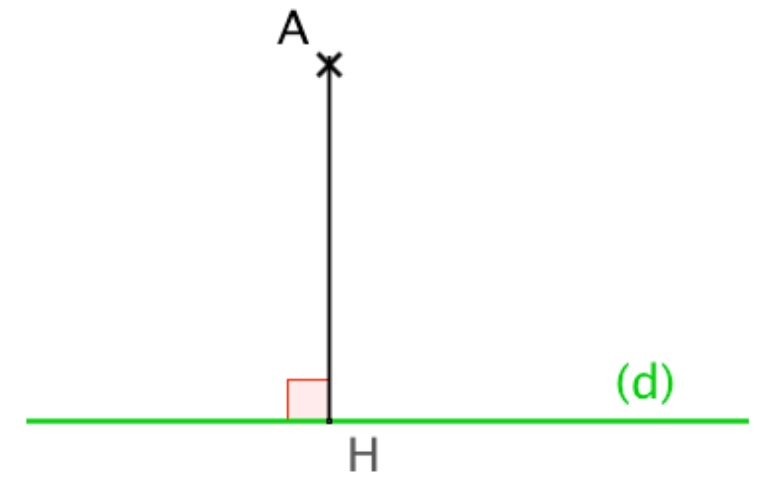

Chapitre 5 : Construire des droites parallèles et perpendiculaires
I. Rappels : Relations de perpendicularité et de parallélisme
1) Droites perpendiculaires
Définition : Deux droites sont perpendiculaires si elles sont sécantes et forment quatre angles droits (angles égaux).
Notation : Si les droites (d) et (d') sont perpendiculaires, on note (d) ⊥ (d').
Exemple :

Les droites (AB) et (CD) sont perpendiculaires en K.
On note : (AB) ⊥ (CD)
On code l'angle droit par un petit carré à l'intersection.
2) Droites parallèles
Définition : Deux droites sont parallèles si elles ne sont pas sécantes.
Notation : Si les droites (d) et (d') sont parallèles, on note (d) // (d').
Exemple :

II. Construire une perpendiculaire
Méthode : Pour tracer la perpendiculaire à une droite (d) passant par un point A :
- Placer un côté de l'angle droit de l'équerre le long de la droite (d)
- Faire glisser l'équerre jusqu'à ce que l'autre côté de l'angle droit passe par le point A
- Tracer la droite perpendiculaire en suivant ce côté de l'équerre
Attention : Il faut bien vérifier que le sommet de l'angle droit de l'équerre est bien placé et que l'équerre ne bouge pas pendant le tracé.
III. Construire une parallèle
Méthode : Pour tracer une droite parallèle à (d) passant par un point A :
- Placer un côté de l'angle droit de l'équerre le long de la droite (d)
- Placer une règle le long de l'autre côté de l'équerre
- Maintenir la règle fixe et faire glisser l'équerre le long de la règle jusqu'à ce que le premier côté passe par le point A
- Tracer la droite parallèle à (d) en suivant ce côté de l'équerre
Autre méthode : On peut aussi construire une parallèle en utilisant les perpendiculaires : tracer une droite (d₁) perpendiculaire à (d), puis tracer une droite perpendiculaire à (d₁) passant par A.
IV. Distance d'un point à une droite
Définition : La distance d'un point à une droite est la longueur du plus petit segment reliant ce point à l'un des points de la droite.

Propriété : La distance d'un point A à une droite (d) est la longueur du segment reliant le point A au pied de la perpendiculaire à (d) passant par ce même point A.
Exemple :

Si H est le pied de la perpendiculaire à (d) passant par A, alors la distance de A à (d) est la longueur AH.
Pour tout autre point M sur (d), on a : AH < AM